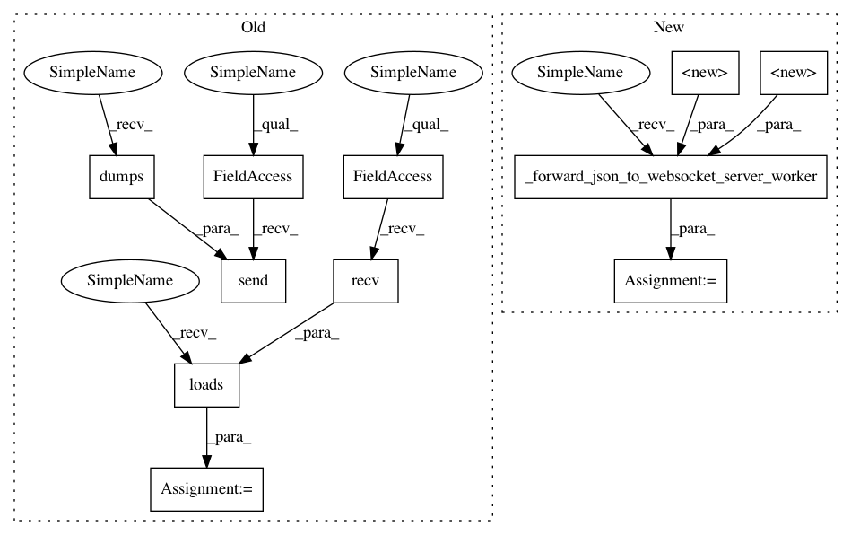

00be4ae634832d8c39a2468c66349df964585a2c,grid/websocket_client.py,WebsocketGridClient,get_node_id,#WebsocketGridClient#,89
Before Change
def get_node_id(self):
message = {"type": "get-id"}
self.ws.send(json.dumps(message))
response = json.loads(self.ws.recv())
return response["id"]
def connect_nodes(self, node):
message = {"type": "connect-node", "address": node.address, "id": node.id}
After Change
Returns:
node_id (str) : node id used by remote worker.
message = {REQUEST_MSG.TYPE_FIELD: REQUEST_MSG.GET_ID}
response = self._forward_json_to_websocket_server_worker(message)
return response.get(RESPONSE_MSG.NODE_ID, None)
def connect_nodes(self, node) -> dict:
Connect two remote workers between each other.
In pattern: SUPERPATTERN
Frequency: 3
Non-data size: 11
Instances
Project Name: OpenMined/Grid
Commit Name: 00be4ae634832d8c39a2468c66349df964585a2c
Time: 2019-10-21
Author: ionesiojr@gmail.com
File Name: grid/websocket_client.py
Class Name: WebsocketGridClient
Method Name: get_node_id
Project Name: OpenMined/Grid
Commit Name: 00be4ae634832d8c39a2468c66349df964585a2c
Time: 2019-10-21
Author: ionesiojr@gmail.com
File Name: grid/websocket_client.py
Class Name: WebsocketGridClient
Method Name: delete_model
Project Name: OpenMined/Grid
Commit Name: 00be4ae634832d8c39a2468c66349df964585a2c
Time: 2019-10-21
Author: ionesiojr@gmail.com
File Name: grid/websocket_client.py
Class Name: WebsocketGridClient
Method Name: get_node_id
Project Name: OpenMined/Grid
Commit Name: 00be4ae634832d8c39a2468c66349df964585a2c
Time: 2019-10-21
Author: ionesiojr@gmail.com
File Name: grid/websocket_client.py
Class Name: WebsocketGridClient
Method Name: serve_model